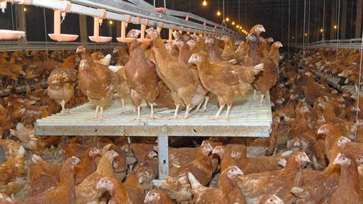
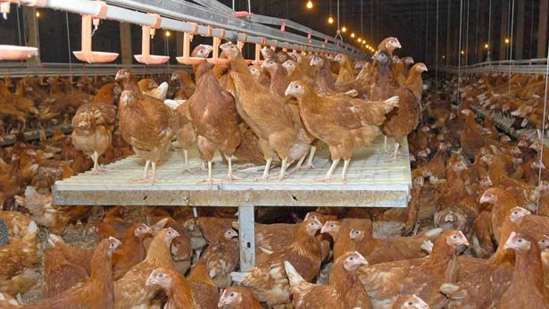

AIRCELL AGRO HOLDINS
AIRCELL AGRO HOLDINS
Welcome!!!
 

Aircell Agro Holdins Farm
Aircell Agro Holdins Farm Aircell Agro Holdings has entered into High Tech Agro business by cultivating Protected Cultivation of High Valued Crops adopting various Hi tech technologies. This effort has been taken so that the agro products retain its freshness until it reaches up to the end user. MOREOVER TO PROVIDE A UNIQUE INVESTMENT OPPORTUNITY TO THE PEOPLE.
Aircell Agro Holdins Farm
Aircell Agro Holdins realized that in this techno world everyone is building sky scrapers, townships and complexes, no place has been left for the trees to grow and sway. All these made us think of farming. According to us if our ancestors earned their livelihood through farming then why not we. Moreover this concept introduced by us is not only farming its 21st century farming, whereby a set of techno economic activities will be carried out for conservation and handling of agricultural produce and to make it usable as food, feed, fiber, fuel or industrial raw material.